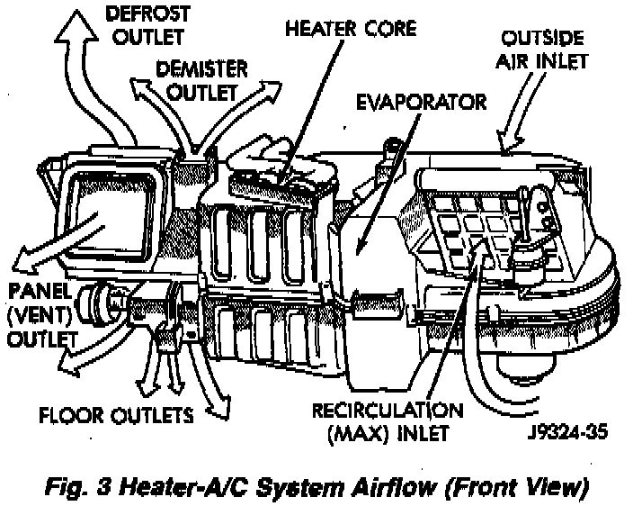

System Airflow
Fig.3 Heater-A/C System Airflow (Front View):

SYSTEM AIRFLOW
The system pulls outside (ambient) air through the cowl opening at the base of the windshield. Then it goes into the plenum chamber above the Heater-A/C unit housing. On air conditioned vehicles, the air passes through the evaporator. Air flow can be directed either through or around the heater core. This is done by adjusting the blend-air door with the TEMP control on the instrument panel. The air flow can then be directed from the PANEL, BI-LEVEL (panel and floor), FLOOR, FLOOR/DEFROST or DEFROST outlets. Air flow velocity can be adjusted with the blower speed selector switch on the instrument panel.
On air conditioned vehicles, outside air can be shut off by opening the recirculating air door. This will recirculate the air that is already inside the vehicle. This is done by rotating the TEMP control knob into the RECIRC position.